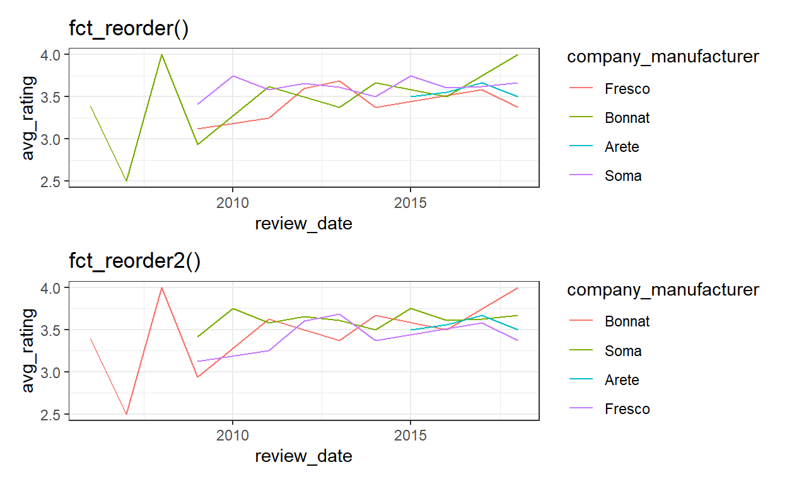
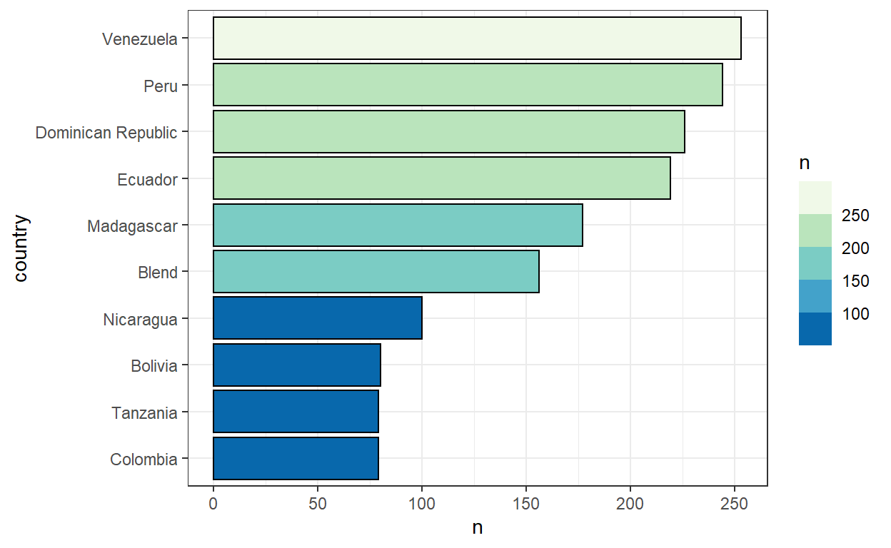
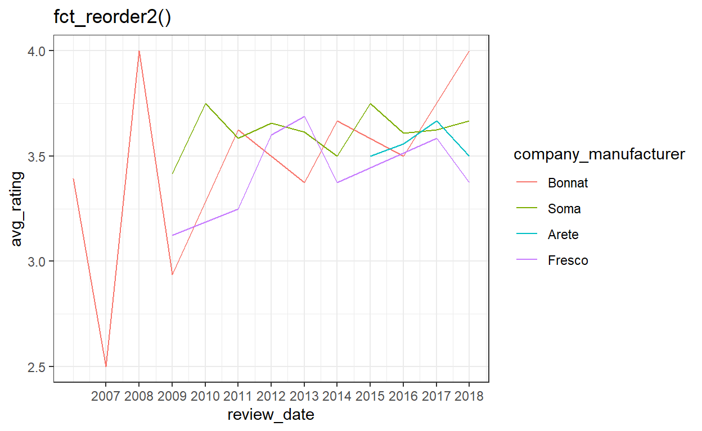

Easy to miss, hard to forget.
Artwork by Allison Horst
Throughout the years, we become more fluent using R. However, like in any language, use of accurate words (functions in this case) can shorten, clarify, and save a lot of time in communicating code or insights.
The purpose of this post is to summarize a few functions learned the hard way, to be used a reference for me, and maybe allow you to discover some new functions or new use cases for functions you already know.
For demonstrating purposes, we will use data from the tidytuesday project regarding Chocolate Ratings.
chocolate <- readr::read_csv('https://raw.githubusercontent.com/rfordatascience/tidytuesday/master/data/2022/2022-01-18/chocolate.csv')
skimr::skim(chocolate)
| Name | chocolate |
| Number of rows | 2530 |
| Number of columns | 10 |
| _______________________ | |
| Column type frequency: | |
| character | 7 |
| numeric | 3 |
| ________________________ | |
| Group variables | None |
Variable type: character
| skim_variable | n_missing | complete_rate | min | max | empty | n_unique | whitespace |
|---|---|---|---|---|---|---|---|
| company_manufacturer | 0 | 1.00 | 2 | 39 | 0 | 580 | 0 |
| company_location | 0 | 1.00 | 4 | 21 | 0 | 67 | 0 |
| country_of_bean_origin | 0 | 1.00 | 4 | 21 | 0 | 62 | 0 |
| specific_bean_origin_or_bar_name | 0 | 1.00 | 3 | 51 | 0 | 1605 | 0 |
| cocoa_percent | 0 | 1.00 | 3 | 6 | 0 | 46 | 0 |
| ingredients | 87 | 0.97 | 4 | 14 | 0 | 21 | 0 |
| most_memorable_characteristics | 0 | 1.00 | 3 | 37 | 0 | 2487 | 0 |
Variable type: numeric
| skim_variable | n_missing | complete_rate | mean | sd | p0 | p25 | p50 | p75 | p100 | hist |
|---|---|---|---|---|---|---|---|---|---|---|
| ref | 0 | 1 | 1429.80 | 757.65 | 5 | 802 | 1454.00 | 2079.0 | 2712 | ▆▇▇▇▇ |
| review_date | 0 | 1 | 2014.37 | 3.97 | 2006 | 2012 | 2015.00 | 2018.0 | 2021 | ▃▅▇▆▅ |
| rating | 0 | 1 | 3.20 | 0.45 | 1 | 3 | 3.25 | 3.5 | 4 | ▁▁▅▇▇ |
separate_rows()As you may have noticed, the most memorable characteristics of a chocolate are organized in a string with multiple characteristics separated by commas.
[1] "dominate cocoa notes" "muted, nutty"
[3] "intense, sweet, brownie" "creamy, complex, coffee"
[5] "sandy, tobacco, molasses" "strawberry, butterscotch, off"
[7] "nutty, off, roasty, fatty" "astringent, smomkey cocoa"
[9] "grassy, earthy, coffee" "gritty, sticky, smoke,hammy" Often, we would like to “unlist” those characteristics, maybe to understand how people describe chocolate. One way of doing this is using separate(). However, this poses an inconvenience when the number of objects in the list is unknown or variable. ‘separate_rows()’ simplifies the process.
chocolate_separated <- chocolate %>%
select(most_memorable_characteristics, rating) %>%
separate_rows(most_memorable_characteristics, sep = ", ")
chocolate_separated
# A tibble: 6,927 x 2
most_memorable_characteristics rating
<chr> <dbl>
1 rich cocoa 3.25
2 fatty 3.25
3 bready 3.25
4 cocoa 3.5
5 vegetal 3.5
6 savory 3.5
7 cocoa 3.75
8 blackberry 3.75
9 full body 3.75
10 chewy 3
# ... with 6,917 more rowsThis makes finding the most used descriptions easy.
chocolate_words <- chocolate_separated %>%
group_by(most_memorable_characteristics) %>%
summarize(n = n(), avg_rating = mean(rating))
chocolate_words %>%
top_n(10, n)
# A tibble: 10 x 3
most_memorable_characteristics n avg_rating
<chr> <int> <dbl>
1 cocoa 242 3.38
2 creamy 186 3.47
3 earthy 187 3.03
4 fatty 163 3.08
5 floral 143 3.25
6 nutty 259 3.29
7 roasty 209 3.20
8 sandy 164 3.10
9 spicy 138 3.30
10 sweet 264 3.05if_any(), if_all()Another common problem is filtering across columns. One neat trick is to use if_any() and if_all(). Suppose we want to filter common words that also have a high avg_rating.
chocolate_words %>%
filter(if_all(n:avg_rating, ~.x > quantile(.x, 0.75))) %>%
arrange(desc(avg_rating))
# A tibble: 21 x 3
most_memorable_characteristics n avg_rating
<chr> <int> <dbl>
1 peanut 7 3.75
2 balanced 16 3.73
3 raspberry 13 3.71
4 mild tart 4 3.69
5 rich choco 4 3.69
6 robust 4 3.69
7 long 10 3.62
8 blackberry 11 3.61
9 delicate 12 3.60
10 dark berry 17 3.60
# ... with 11 more rowsOr maybe, you want to filter words that are either common or have high average rating.
# A tibble: 366 x 3
most_memorable_characteristics n avg_rating
<chr> <int> <dbl>
1 sweet 264 3.05
2 nutty 259 3.29
3 cocoa 242 3.38
4 roasty 209 3.20
5 earthy 187 3.03
6 creamy 186 3.47
7 sandy 164 3.10
8 fatty 163 3.08
9 floral 143 3.25
10 spicy 138 3.30
# ... with 356 more rowsThese functions help a lot when dealing with many columns of similar properties. Especially if you work with questionnaires or questionnaires scores and want to see if multiple categories are true.
!x %in% yOne of the functions I love and use frequently is %in%. However, its negation is often not intuitive. Some people use packages to allow for a %nin% function, (others build their own function)[https://twitter.com/vishal_katti/status/1111712316649689088]. Maybe it is because I learned R before SQL, but I prefer not writing a function or using a package for just one function when I can use an existing syntax.
chocolate %>%
count(company_location, sort = T) %>%
filter(!company_location %in% c("U.S.A.", "Canada", "France"))
# A tibble: 64 x 2
company_location n
<chr> <int>
1 U.K. 133
2 Italy 78
3 Belgium 63
4 Ecuador 58
5 Australia 53
6 Switzerland 44
7 Germany 42
8 Spain 36
9 Denmark 31
10 Japan 31
# ... with 54 more rowscount(.drop = F) explicitlyAll credit to Shannon Pileggi on this one. This allows to explicitly show all levels of a factor (or combinations of factors) when counting, even if it has zero occurrences.
chocolate %>%
mutate(across(c(company_location, country_of_bean_origin), factor)) %>%
count(company_location, country_of_bean_origin, sort = T, .drop = F) %>%
tail()
# A tibble: 6 x 3
company_location country_of_bean_origin n
<fct> <fct> <int>
1 Wales Trinidad 0
2 Wales U.S.A. 0
3 Wales Uganda 0
4 Wales Vanuatu 0
5 Wales Venezuela 0
6 Wales Vietnam 0complete() explicitlyThis one is similar to the count(.drop = F) trick, but allows us to fill the other columns in missing categories with whatever relevant values. Here for example it would be reasonable to fill the count with 0, but the rating with NA.
set.seed(2022)
chocolate_sample <- chocolate %>%
group_by(company_location, country_of_bean_origin) %>%
summarize(n = n(), avg_rating = mean(rating), .groups = "drop") %>%
sample_n(2)
chocolate_sample
# A tibble: 2 x 4
company_location country_of_bean_origin n avg_rating
<chr> <chr> <int> <dbl>
1 Italy Madagascar 6 3.25
2 U.S.A. Honduras 15 3.33chocolate_sample %>%
complete(company_location, country_of_bean_origin,
fill = list(n = 0, rating = NA_real_))
# A tibble: 4 x 4
company_location country_of_bean_origin n avg_rating
<chr> <chr> <dbl> <dbl>
1 Italy Honduras 0 NA
2 Italy Madagascar 6 3.25
3 U.S.A. Honduras 15 3.33
4 U.S.A. Madagascar 0 NA Whenever visualizing multiple time-series, arranging the legend can be a pain. the usual fct_reorder() does not deliver here. No more. Notice the difference in the order.
fct_reorder2()chocolate_rating_by_year_company <- chocolate %>%
group_by(company_manufacturer) %>%
filter(n() >= 30, review_date <= 2018) %>%
group_by(company_manufacturer, review_date) %>%
summarize(avg_rating = mean(rating), .groups = "drop")
chocolate_rating_by_year_company
# A tibble: 30 x 3
company_manufacturer review_date avg_rating
<chr> <dbl> <dbl>
1 Arete 2015 3.5
2 Arete 2016 3.56
3 Arete 2017 3.67
4 Arete 2018 3.5
5 Bonnat 2006 3.39
6 Bonnat 2007 2.5
7 Bonnat 2008 4
8 Bonnat 2009 2.94
9 Bonnat 2011 3.62
10 Bonnat 2013 3.38
# ... with 20 more rowsg1 <- chocolate_rating_by_year_company %>%
mutate(company_manufacturer = fct_reorder(company_manufacturer, avg_rating)) %>%
ggplot(aes(review_date, avg_rating, color = company_manufacturer)) +
geom_line() +
labs(title = "fct_reorder()")
g2 <- chocolate_rating_by_year_company %>%
mutate(company_manufacturer = fct_reorder2(.f = company_manufacturer,
.x = review_date,
.y = avg_rating)) %>%
ggplot(aes(review_date, avg_rating, color = company_manufacturer)) +
geom_line() +
labs(title = "fct_reorder2()")
g1 / g2

scale_fill_fermenter()Often, I use a continuous variable as the fill/color aesthetics but I prefer it would be binned by steps. scale_fill_fermenter() is from the same family of scale_fill_brewer() and scale_fill_distiller(), but allows binning of the continuous scale and allows to understand whether a value is in a range more easily.
chocolate %>%
count(country_of_bean_origin, sort = T) %>%
head(10) %>%
mutate(country = fct_reorder(country_of_bean_origin, n)) %>%
ggplot(aes(n, country, fill = n)) +
geom_col(color = "black") +
scale_fill_fermenter(palette = 4, breaks = seq(0,300, 50))

print()After building a massive piping system, sometimes you want to print an intermediate value to check that everything performs as expected. Just pipe, print, and pipe again. When you finish, you could just Ctrl + D those lines.
chocolate %>%
print() %>%
select(company_manufacturer, rating) %>%
print() %>%
group_by(company_manufacturer) %>%
summarize(n = n(), avg_rating = mean(rating))
# A tibble: 2,530 x 10
ref company_manufacturer company_location review_date
<dbl> <chr> <chr> <dbl>
1 2454 5150 U.S.A. 2019
2 2458 5150 U.S.A. 2019
3 2454 5150 U.S.A. 2019
4 2542 5150 U.S.A. 2021
5 2546 5150 U.S.A. 2021
6 2546 5150 U.S.A. 2021
7 2542 5150 U.S.A. 2021
8 797 A. Morin France 2012
9 797 A. Morin France 2012
10 1011 A. Morin France 2013
# ... with 2,520 more rows, and 6 more variables:
# country_of_bean_origin <chr>,
# specific_bean_origin_or_bar_name <chr>, cocoa_percent <chr>,
# ingredients <chr>, most_memorable_characteristics <chr>,
# rating <dbl>
# A tibble: 2,530 x 2
company_manufacturer rating
<chr> <dbl>
1 5150 3.25
2 5150 3.5
3 5150 3.75
4 5150 3
5 5150 3
6 5150 3.25
7 5150 3.5
8 A. Morin 3.5
9 A. Morin 3.75
10 A. Morin 2.75
# ... with 2,520 more rows# A tibble: 580 x 3
company_manufacturer n avg_rating
<chr> <int> <dbl>
1 5150 7 3.32
2 A. Morin 26 3.42
3 Acalli 4 3.56
4 Adi aka Fijiana (Easy In Ltd) 4 3.25
5 Aelan 4 2.75
6 Aequare (Gianduja) 2 2.88
7 Ah Cacao 1 3
8 Akesson's (Pralus) 3 3.08
9 Alain Ducasse 6 2.83
10 Alexandre 4 3.5
# ... with 570 more rowsidentity()This one is a frustration-saver. When working with pipes, it could be exhausting to remove the previous line whenever you delete the last line. Add an identity() as the last line, and then you can add/remove all the others without worries.
# A tibble: 580 x 2
company_manufacturer n
<chr> <int>
1 5150 7
2 A. Morin 26
3 Acalli 4
4 Adi aka Fijiana (Easy In Ltd) 4
5 Aelan 4
6 Aequare (Gianduja) 2
7 Ah Cacao 1
8 Akesson's (Pralus) 3
9 Alain Ducasse 6
10 Alexandre 4
# ... with 570 more rowsNULLThis one is actually not a function. It serves the same purpose as identity() but for ggplots.
g2 +
scale_x_continuous(breaks = seq(2007,2018, 1)) +
NULL

As I wrote at the beginning, the purpose of this post was to summarize a few functions learned the hard way, to be used a reference for me, and maybe allow you to discover some new functions or new use cases for functions you already know. What are your secret functions?